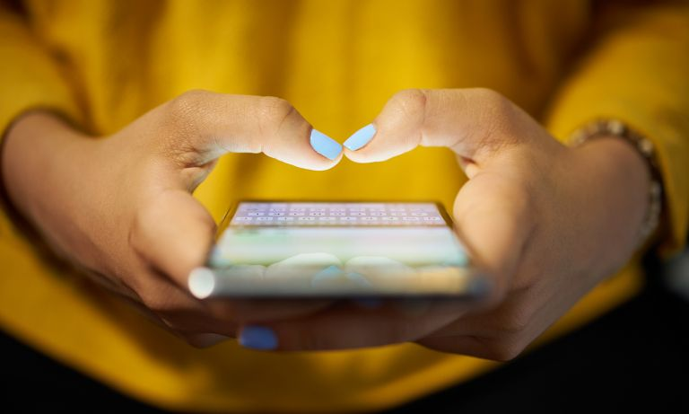
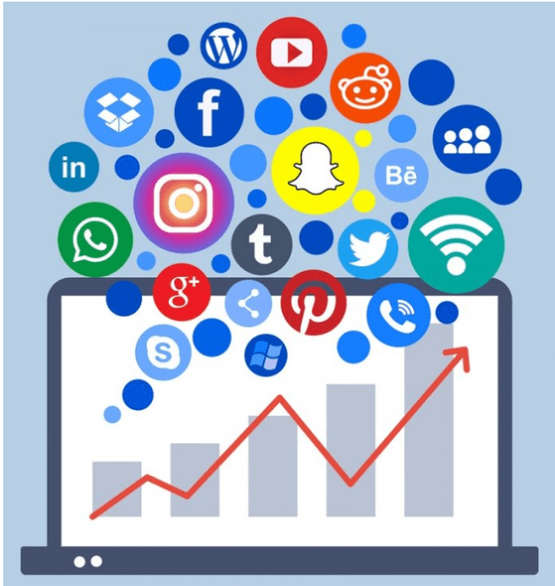

While many of us enjoy staying connected on social media, excessive use can fuel feelings of anxiety, depression, isolation, and FOMO. Here’s how to modify your habits and improve your mood.
Human beings are social creatures. We need the companionship of others to thrive in life, and the strength of our connections has a huge impact on our mental health and happiness. Being socially connected to others can ease stress, anxiety, and depression, boost self-worth, provide comfort and joy, prevent loneliness, and even add years to your life. On the flip side, lacking strong social connections can pose a serious risk to your mental and emotional health.
In today’s world, many of us rely on social media platforms such as Facebook, Twitter, Snapchat, YouTube, and Instagram to find and connect with each other. While each has its benefits, it’s important to remember that social media can never be a replacement for real-world human connection. It requires in-person contact with others to trigger the hormones that alleviate stress and make you feel happier, healthier, and more positive. Ironically for a technology that’s designed to bring people closer together, spending too much time engaging with social media can actually make you feel more lonely and isolated—and exacerbate mental health problems such as anxiety and depression.
If you’re spending an excessive amount of time on social media and feelings of sadness, dissatisfaction, frustration, or loneliness are impacting your life, it may be time to re-examine your online habits and find a healthier balance.
 click here for next